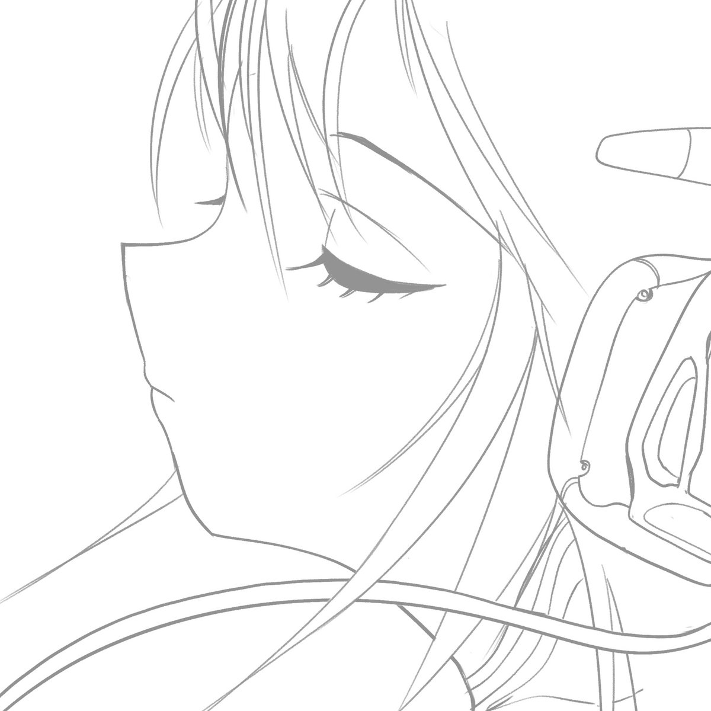
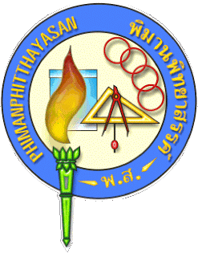
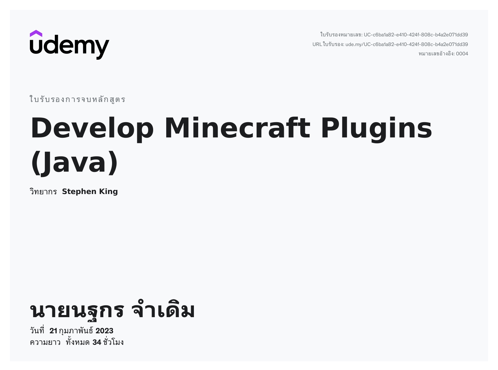
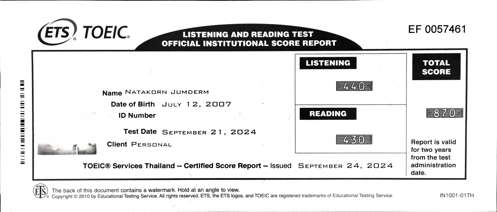
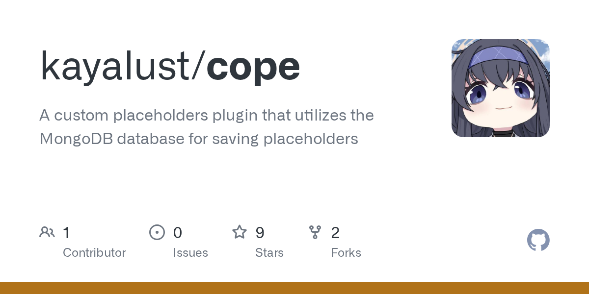
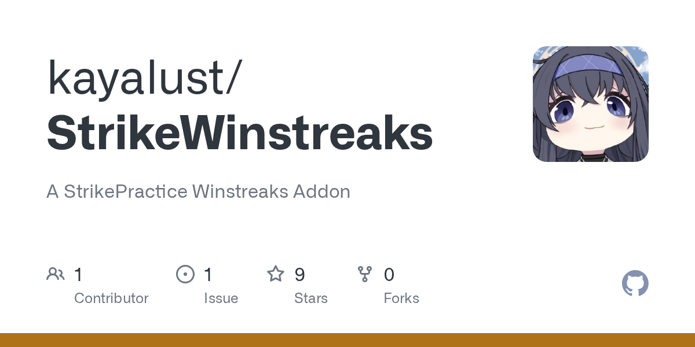

Natakorn Jumderm
Liberal Arts Undergraduate - English Major
About me
Name's Natakorn Jumderm, also known as vocoid on the internet. As of right now, I'm a second-year student at King Mongkut's Institute of Technology Ladkrabang.
In my free time, I've picked up hobbies like playing rhythm games, doing graphic designs, and coding.
Education
-

Phiman Pittayasan School (2023 - 2025) - King Mongkut's Institute of Technology Ladkrabang (2025 - now)
Showcase
Coding
- Java - well-versed with the concepts of OOP. has intermediate experience with Spring Boot framework and Spigot API.
- JavaScript - had a mentor guide me thru the whole process, thank you ProperPoli777
- Python - picked up while learning to work with a custom osu! server software, bancho.py
Certificates


Graphic Design
Alongside development I volunteered as a GFX artist in several osu!mania tournaments. My work spans over key art and banners, logos, forum design, stream overlays and layout, and social media graphics.
Click on the images below to view individual tournament thread on osu!
Projects
Most of my works are private, though here are some of my projects which I've worked on.
-
cope - a custom placeholders plugin that uses a MongoDB database to store placeholders, original purpose is to be used with PlaceholderAPI to display player statistics

-
StrikeWinstreaks - a StrikePractice addon that tracks a player's win streak for each kit

Contact
Feel free to reach me via any of these:
GitHub: github.com/vocoid
Email: kayalust777@gmail.com